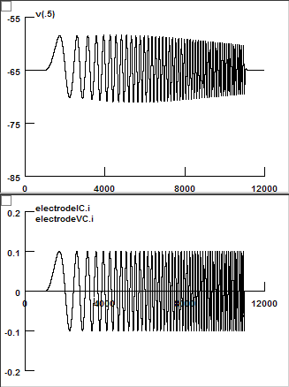

|
Let's check Sonia's Ih. Parameters:
Start "Main.hoc". |
||
Measure membrane time constant:embrane time constant: |
||
gbar_h = 2.15e-5 e_pas = -70 With this set of parameters, the resting membrane potential is hyperpolarized. To have a resting potential at -65 mV, change gbar_h to 4e-5 and you will have the resting membrane potential at -65 mV. The assumption is that when Ih is blocked, the membrane potential hyperpolarizes by 5 mV. |
Voltage and Current Traces (gbar_h = 2.15e-5) |
Voltage and Current Traces (gbar_h = 4e-5) |
| Click "Fit Decay" button. |
Tau = 24.3 (ms) |
|
Measure Rin and Rebound Slope: |
||
|
Voltage and Current Traces: |
Rin = 56.9 (M Ohm) (Linear Regression) Rebound Slope = -0.17 (mV/mV) (Linear Regression) |
Temporal Summation: |
||
|
Temporal Summation = 11.0 (%) |
|
Chirp Experiment: |
||
|
Voltage and Current Traces:  |
Impedance Amplitude: Depolarizing Resonance Frequency = 3.5 (Hz) Hyperpolarizing Resonance Frequency = 4.5 (Hz) Voltage Lag: |
Voltage Clamp Experiment: |
||
|
Voltage and Current Traces: |
GV Curve: Vhalf = -81.1 (mV) k = 7.90 (mV) |
|
Voltage and Current Traces: |
Tau: |